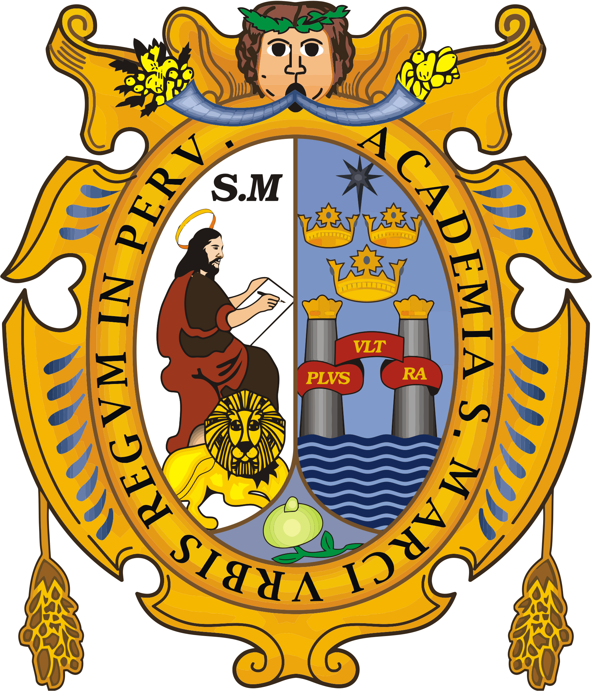
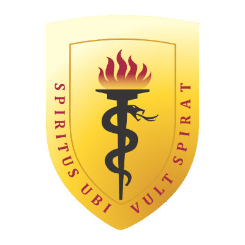

¿Qué hacemos?
Nuestro programa está diseñado para transformar tu forma de estudiar y convertirte en una persona que:
- Organiza su tiempo con enfoque en resultados.
- Mantiene la motivación y la energía a lo largo de su preparación.
- Estudia con intención, no por inercia.
Nos enfocamos en postulantes a universidades como la UNI, San Marcos, PUCP, Cayetano Heredia y otras, donde se sabe que ingresar no solo requiere tener conocimiento, sino estrategia y, lo mas importante, disciplina.

